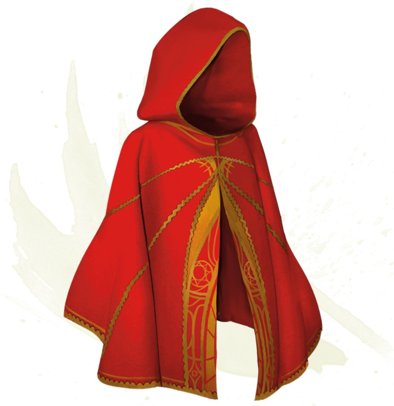

Cape of the Mountebank
Wondrous item, rare
This cape smells faintly of brimstone. While wearing it, you can use it to cast the dimension door spell as an action. This property of the cape can't be used again until the next dawn.
When you disappear, you leave behind a cloud of smoke, and you appear in a similar cloud of smoke at your destination. The smoke lightly obscures the space you left and the space you appear in, and it dissipates at the end of your next turn. A light or stronger wind disperses the smoke.
When you disappear, you leave behind a cloud of smoke, and you appear in a similar cloud of smoke at your destination. The smoke lightly obscures the space you left and the space you appear in, and it dissipates at the end of your next turn. A light or stronger wind disperses the smoke.
Dungeon Master´s Guide (SRD)
